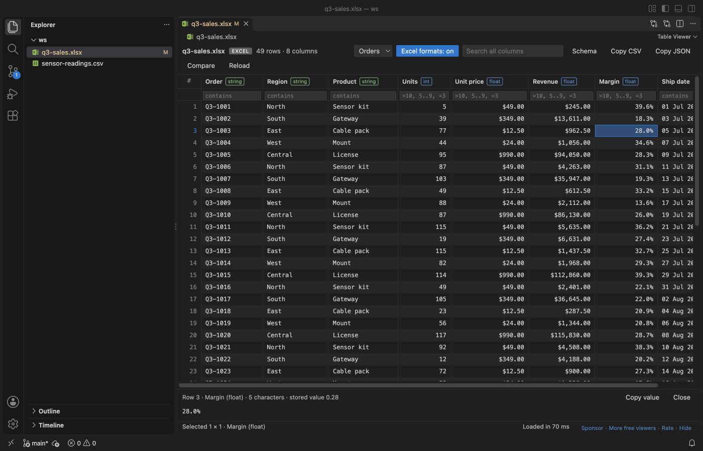

한국어 가이드 · Table Viewer
VS Code에서 Excel과 CSV를 표로 열기
VS Code는 .xlsx를 바이너리로, CSV를 일반 텍스트로 엽니다. 무료 Table Viewer 확장은 Excel 통합 문서, CSV, Parquet 파일을 정렬, 필터, 검색이 되는 표로 최대 1,000,000행까지 보여주고, Excel의 숫자 서식과 수식도 그대로 보여줍니다. Query 버튼으로 파일에 GROUP BY가 들어간 SQL을 실행할 수 있습니다. Excel과 Python이 필요 없고, 데이터는 네트워크로 나가지 않습니다.
무료, MIT 라이선스. 확장 ID zovo.table-viewer-vscode, 버전 0.5.7. VS Code 1.90.0 이상이 필요합니다.
다른 언어판 English · Deutsch · Polski · Español · 日本語 · Français · Bahasa Indonesia · Italiano · Nederlands · Português (Brasil) · Русский · Türkçe · Tiếng Việt · 简体中文

VS Code에서 하는 방법
- Marketplace에서 Table Viewer 확장을 설치하거나, Ctrl+P(macOS에서는 Cmd+P)를 누르고
ext install zovo.table-viewer-vscode를 실행합니다. - 탐색기에서
.xlsx,.xlsm,.xlsb,.xls,.ods,.parquet파일을 클릭하면 표로 열립니다. 시트가 여러 개인 통합 문서는 시트 선택 목록이 나옵니다. .csv와.tsv는 기본으로 텍스트로 열립니다. 편집기 오른쪽 위의 표 아이콘을 누르거나, 파일을 마우스 오른쪽 버튼으로 클릭하고 "Open in Table Viewer"를 고릅니다.- 열 머리글을 클릭해 정렬합니다. 머리글 아래 칸에
>10,5..9, 텍스트 일부를 입력해 필터합니다. 위쪽 검색 상자는 모든 열을 찾습니다. - Query를 누르고
SELECT를 쓴 뒤 Ctrl+Enter(macOS에서는 Cmd+Enter)를 누릅니다.FROM this는 지금 연 파일이고, 같은 통합 문서의 다른 시트와 JOIN하는 것은 무료입니다. - Copy CSV, Copy JSON, Copy Markdown은 선택한 셀을 복사합니다. Export는 필터한 행을 CSV, TSV, JSON, JSON Lines로 저장합니다.
무료 기능과 Zovo Pro
CSV, TSV, Excel, Parquet 열기, 시트, 수식, 정렬, 필터, 검색, 열 통계, SQL 필터, 표에 있는 행에 대한 SQL 조회, 같은 통합 문서 안의 시트 JOIN, Git 버전과 비교, CSV, TSV, JSON으로 내보내기는 무료입니다.
데이터가 달마다, 지점마다 다른 파일로 올 때 Combine Files and Sheets는 여러 CSV, TSV, Excel, ODS, Parquet 파일이나 폴더 하나, 통합 문서의 모든 시트를 CSV, XLSX, Parquet 파일 하나로 합칩니다. 열은 머리글 이름으로 맞춰지고, source_file과 source_sheet 열에 각 행이 어디서 왔는지 남습니다. Zovo Pro는 표에 앞부분만 들어간 큰 파일 전체에 대한 조회(수 GB CSV의 GROUP BY), 다른 파일과의 JOIN, Parquet으로 저장도 더합니다.
Combine Files and Sheets 사용하기 (Zovo Pro)
- 탐색기에서 폴더, 선택한 여러 표 파일, 또는 통합 문서를 마우스 오른쪽 버튼으로 클릭하고 Combine Files and Sheets를 고릅니다. 툴바의 Combine 버튼이나 Command Palette의 "Excel Viewer Pro: Combine Files and Sheets (Pro)..."도 같습니다.
- 출력 형식(CSV, XLSX, Parquet)과 저장 위치를 고릅니다.
- 읽을 수 없는 파일은 건너뛰고 요약에 나열됩니다. 원본 파일은 바뀌지 않습니다.
Combine Files and Sheets 기능은 라이선스를 묻기 전에 내 컴퓨터에서 3번 쓸 수 있고, 결과를 얻었을 때만 1번으로 셉니다. 파일을 열 때 Pro 안내는 나오지 않습니다.
Zovo Pro는 USD 19를 한 번만 내면 됩니다. 구독이 아니며, 이 확장뿐 아니라 모든 Zovo 확장의 Pro 도구가 켜집니다. 카드(Stripe)로 결제하면 다음 페이지에 라이선스 키가 표시됩니다. VS Code의 Command Palette에서 "Zovo Pro: Enter Zovo Pro license key"를 실행하고 키를 붙여 넣으세요. 키는 네트워크 연결 없이 내 컴퓨터에서 확인됩니다. GitHub Sponsors로 결제할 때는 "$19 one time" 등급을 고른 뒤, 같은 GitHub 계정으로 "Zovo Pro: I already paid: unlock with GitHub Sponsors"를 실행하세요. PayPal로 결제할 때는 메모에 "Zovo Pro"라고 적어 USD 19를 보내면 하루 안에 이메일로 키를 받습니다.
5명 팀 라이선스는 USD 59 한 번이며, 카드 또는 PayPal로 결제할 수 있습니다. 모든 규칙과 Pro 도구는 Zovo Pro 페이지(영어)에 있습니다.
Cursor, Windsurf, VSCodium에서
이 편집기들은 Open VSX에서 확장을 설치합니다. Ctrl+Shift+X(macOS에서는 Cmd+Shift+X)로 Extensions 보기를 열고 zovo.table-viewer-vscode를 검색한 뒤 Install을 누릅니다. 그다음은 VS Code와 같습니다.
할 수 없는 것
- 읽기 전용입니다. 통합 문서를 편집하거나 저장하지 않습니다.
- 기본으로 파일당 1,000,000행까지 불러옵니다(설정
tableViewer.maxRows). - 50 MB가 넘는
.xls,.xlsb,.ods파일은 불러오지 않습니다. - 표보다 큰 CSV 전체에 대한 조회, 다른 파일과의 JOIN, Parquet 저장은 Zovo Pro이며, 각각 3번은 무료입니다.
자주 묻는 질문
Excel이나 Python이 필요한가요?
아니요. 확장은 오프라인으로 동작하는 JavaScript이고, Python 커널이나 계정이 필요 없습니다.
SQL은 유료인가요?
아니요. 표에 있는 행에 대한 조회, SQL 필터, 같은 통합 문서 안의 JOIN은 무료입니다. 큰 파일 전체 읽기와 다른 파일과의 JOIN은 Zovo Pro이며 3번은 무료입니다.
파일이 바뀌면 표도 바뀌나요?
네. 스크립트나 git pull이 파일을 다시 쓰면 약 0.5초 안에 표가 다시 읽히고, 정렬과 필터는 그대로 남습니다.
영어판 가이드에는 다른 방법과 비슷한 확장까지 더 자세히 나와 있습니다.
다른 한국어 가이드
2026년 11월 12일, 확장 버전 0.5.7 기준으로 확인했습니다. 이 확장들은 Zovo가 만든 무료 오픈 소스입니다. 지금 무료인 기능은 앞으로도 무료입니다.